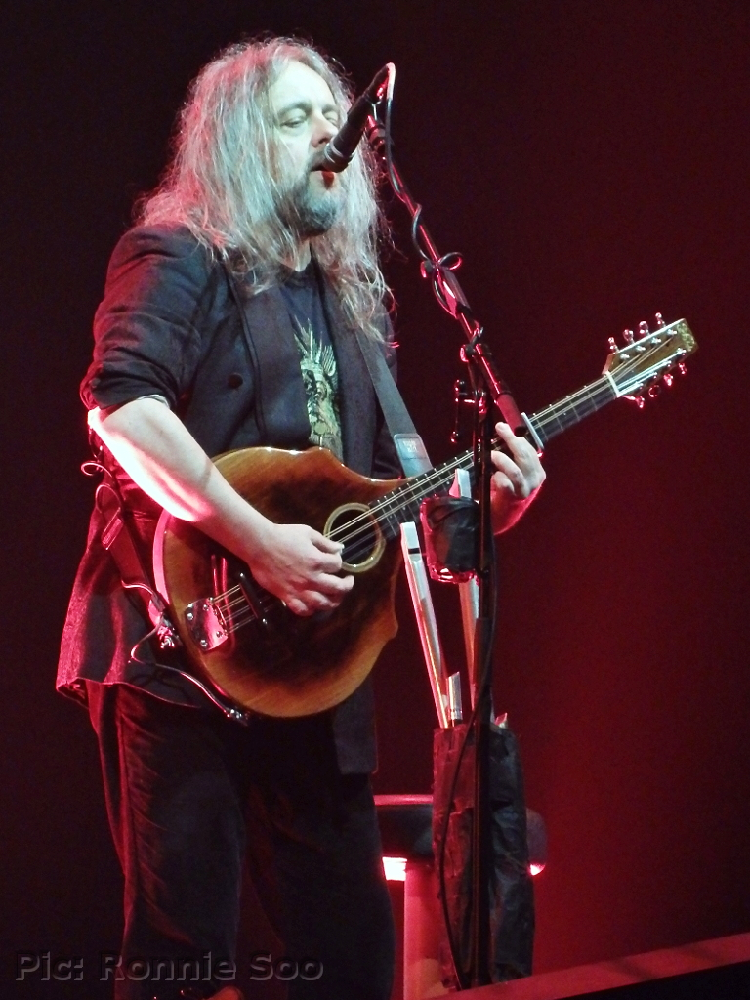
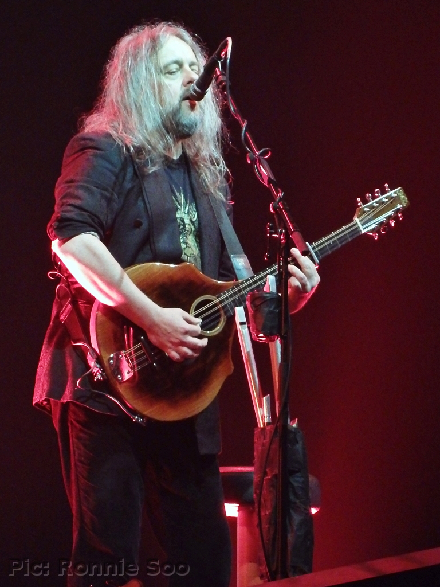

LA LEYENDA DEL METAL SINFÓNICO, NIGHTWISH
Nightwish es una banda finlandesa de metal sinfónico que se formó en 1996. Han logrado un gran éxito en todo el mundo con su música poderosa y melódica, así como con sus letras profundas y emocionales. La banda ha experimentado varios cambios en su formación, pero siempre ha mantenido su sonido característico y distintivo.
La formación actual de Nightwish incluye a Tuomas Holopainen en teclados y composición, Marco Hietala en bajo y voz, Emppu Vuorinen en guitarra, Floor Jansen en voz y Kai Hahto en batería. También cuentan con una sección de cuerdas y coros en vivo para dar a sus actuaciones en vivo una calidad épica.
Una de las características más notables de Nightwish es la voz femenina operística de sus primeras vocalistas, Tarja Turunen e Anette Olzon. Su estilo de canto lírico añade una dimensión única a la música de la banda y les ha ayudado a destacarse en el género del metal sinfónico.
Nightwish también es conocida por sus letras profundas y emocionales, que abordan temas como la naturaleza, la fantasía, el amor y la pérdida. Las letras de sus canciones a menudo cuentan historias épicas y fantásticas, lo que las hace especialmente populares entre los fans del género de la fantasía.